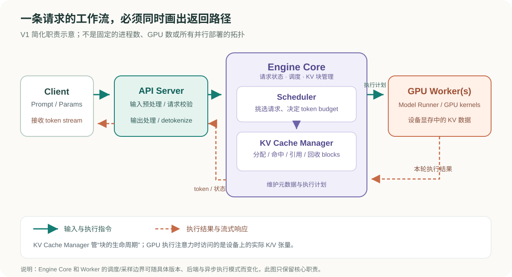

第 02 章 · 推理基础与系统认知
vLLM 概述：它解决的究竟是什么问题？
vLLM 不是一个新的语言模型，而是一套用于高效运行和服务语言模型的推理系统。理解它，要从 GPU 显存、请求长度差异和并发调度这三个系统问题开始。
假设你已经有一个训练好的模型。现在要让几十、几百甚至更多用户同时调用它，问题就不再只是“模型能不能生成文本”，而是“如何在有限的 GPU 显存和计算能力下，稳定地处理不同长度、不同到达时间的请求”。vLLM 的核心价值就在这个 serving 层。
读完这一章，你应该能够
- 区分模型、推理框架和模型服务系统的职责。
- 解释 KV Cache 的动态增长为什么会限制并发。
- 说清楚 PagedAttention、调度和前缀缓存分别解决什么问题。
- 用一张简化架构图描述请求从 API 到 GPU 执行的路径。

2.1 vLLM 是什么？先把边界讲清楚
可以把一套大模型应用拆成四层：
- 模型层：模型权重和网络结构，例如某个 Llama 或 Qwen 模型。
- 推理执行层：加载权重，在 CPU / GPU 上执行前向计算、注意力和采样。
- Serving 层：接收多个用户请求，排队、组批、分配 KV Cache，并把生成结果返回。
- 应用层：RAG、Agent、聊天界面、业务鉴权和数据处理等。
vLLM 主要位于第二层和第三层：它提供模型执行能力，也提供面向并发请求的调度和服务接口。它不会替你训练模型，也不会自动替代向量数据库、检索系统、业务权限或完整的应用编排。
vLLM 项目的标志性工作之一，是 2023 年发表的 PagedAttention 研究。研究者把操作系统分页管理的思想用于 LLM serving 中动态增长的 KV Cache，并在此基础上构建了 vLLM 系统。
2.2 Serving 的难题：请求并不整齐
训练时，一个 batch 往往由数据管线提前组织；在线推理时，请求到达时间不同，Prompt 长度不同，输出长度也无法提前准确知道。比如：
| 请求 | 输入长度 | 输出长度 | 系统面临的情况 |
|---|---|---|---|
| A：简短问答 | 短 | 短 | 可能很快结束并释放资源 |
| B：长文总结 | 长 | 中等 | Prefill 计算量较大 |
| C：代码生成 | 中等 | 很长 | Decode 持续较多轮 |
如果显存管理方式要求每条请求预留一大段连续空间，长度估计不准就可能造成空间浪费；如果批次必须等最慢的请求全部结束，先完成的请求槽位就无法及时让给新请求。不同请求还可能反复使用相同的 system prompt 或文档前缀，导致重复计算。
因此，serving 系统面对的是一组互相影响的问题：KV Cache 怎么分配和回收？请求何时加入批次？长 Prompt 如何避免拖慢正在 Decode 的请求？相同前缀能否复用？多个 GPU 如何协同执行？
2.3 PagedAttention：把 KV Cache 管理变成可分页的块
在传统的连续存储思路中，一条请求的 KV Cache 需要占据连续的内存区域；但请求的真实长度会动态增长。PagedAttention 将 KV Cache 切成固定容量的逻辑块，再通过映射关系找到这些块对应的物理存储位置。
这样做的关键不是“让 Attention 的数学公式变了”，而是改变 K/V 在显存中的组织方式：逻辑上的 token 顺序仍然连续，物理块却可以分散存放。Attention kernel 根据块映射读取需要的数据。
原始 PagedAttention 论文在其特定模型、硬件和工作负载评测中，报告了相对于 FasterTransformer 和 Orca 在相近延迟下 2–4 倍的吞吐提升。这个数字属于论文实验结论，不应直接当成任何模型、GPU 或 vLLM 版本都能达到的保证。
重要区分：PagedAttention 主要解决 KV Cache 的内存组织和访问问题；Continuous Batching 解决请求如何在迭代之间动态组批；Scheduler 决定下一轮做哪些工作。它们互相配合，但不是同一个概念。
2.4 关键能力如何协作？
| 能力 | 回答的问题 | 直观理解 |
|---|---|---|
| Paged KV Cache | 每条请求的 K/V 放在哪里？ | 用块和映射表管理动态增长的缓存 |
| Continuous / Iteration-level Batching | 哪些请求一起执行？ | 每轮迭代都可以重新组织正在运行的请求 |
| Automatic Prefix Caching | 相同前缀是否需要重复计算？ | 识别已计算的 KV blocks，并在满足条件时复用 |
| Scheduler | 本轮处理多少 token、先处理谁？ | 在 token budget、缓存容量和调度策略下安排工作 |
| Parallel Execution | 如何使用多 GPU？ | 按模型结构和硬件拓扑分配计算与通信 |
这些能力的实现细节会随着版本演进。比如当前 V1 设计文档描述的 Scheduler 使用 token budget 统一安排等待和运行中的请求，并将 Chunked Prefill、Prefix Caching 和 Speculative Decoding 纳入同一调度循环。学习或排查具体行为时，应以正在使用的 vLLM 版本文档为准。
2.5 一次请求经过哪些组件？
- API Server 接收请求：解析模型、Prompt、采样参数和请求约束。
- Engine Core 协调执行：维护请求状态，并驱动调度循环。
- Scheduler 决定本轮工作：根据 token budget、请求状态和 KV Cache 容量选择要处理的 token。
- KV Cache Manager 分配和回收：管理物理 blocks、缓存命中和生命周期。
- GPU Workers 执行计算：加载模型权重，执行模型前向和相关 GPU kernel。
- 结果流回 API：返回新 token，直到请求完成或触发停止条件。
这张图是职责视角的简化版。注意输出也有一条完整路径：GPU Worker 的本轮计算结果回到 Engine Core，再由 API Server 完成输出处理和流式发送，最后才抵达客户端。KV Cache Manager 管的是块的分配与生命周期，不意味着 KV 张量存储在 CPU 管理器里。
真实部署可能包含多个 API Server、Engine Core、GPU Worker 和协调进程；Tensor Parallel、Pipeline Parallel、Data Parallel 的组合会改变进程和通信拓扑。不要把简化图中的方框数量当成固定部署数量。
2.6 什么时候选择 vLLM？
如果你需要为多个用户提供模型 API，希望在并发请求下管理 KV Cache、控制延迟和提高 GPU 吞吐，vLLM 是值得评估的选择。它也适合研究推理系统内部机制、实验不同调度和缓存策略。
但选型应当由实际工作负载驱动：模型架构是否支持、目标硬件是否支持、是否需要特定量化或多模态能力、请求长度分布、吞吐与尾延迟目标、部署和运维成本，都会影响结果。其他推理框架可能在特定硬件、模型或工作负载上更合适。
不要这样比较：只列出“支持多少模型”“谁更快”或一个没有硬件和负载信息的吞吐数字。公平比较至少要固定模型版本、输入输出长度分布、并发、硬件、精度、延迟目标和测试工具。
下一章开始深入 PagedAttention：我们会用一个小型块映射例子，逐步解释逻辑 token 位置如何找到物理 KV Cache。
参考资料
- Kwon et al., Efficient Memory Management for Large Language Model Serving with PagedAttention，SOSP 2023。
- vLLM, Architecture Overview，当前 V1 组件职责和调度流程。
- vLLM, Official GitHub Repository，实现、版本与发布信息。